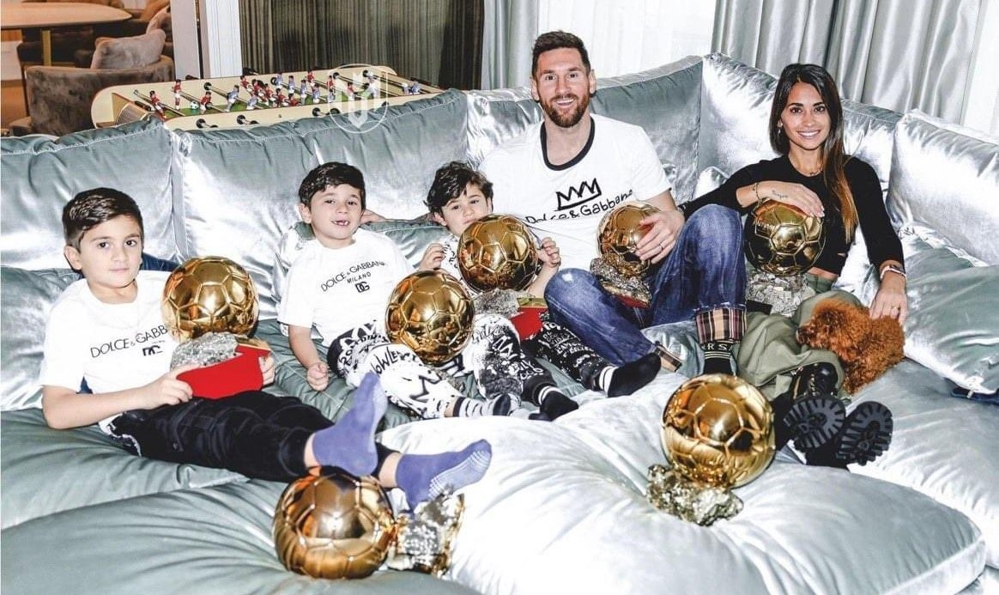
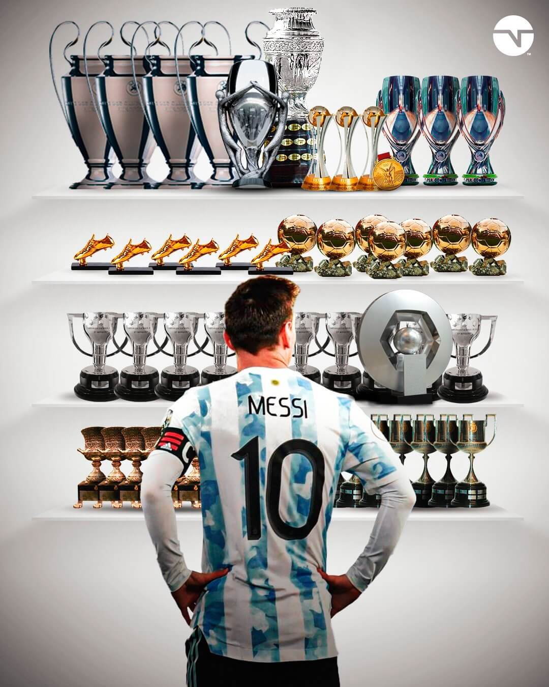
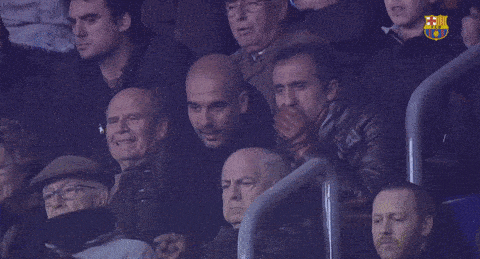

Palmarés y estadísticas

Records:
- Es el máximo ganador del Balon de Oro (premio otorgado al mejor futbolista del año) con 7 primeros puestos -seguido por C.Ronaldo con 5- y 13 podios.
- Es el único jugador en la historia que ganó el balon de oro en tres decadas distintas: 2000's, 2010's y 2020's
- Es el máximo ganador de la bota de oro (premio otorgado al máximo goleador del año) con 6 reconocimientos
- Tiene el record de más goles anotados en un año natural, con 91 en el año 2012 -seguido por Lewandowski con 69 tantos-.
- Posee el record de mas asistencias en un año natural, con 36 en 2011.
Titulos

- Colectivos: 41 titulos oficiales. 35 en el Barcelona: 10 Ligas de España, 7 Copas del Rey, 8 Supercopas de España, 4 Champions League, 3 Mundiales de Clubes y 3 Supercopas de Europa. 4 en Argentina: Mundial Sub 20 del 2005, los Juegos Olímpicos 2008 en Pekín, Copa América 2021 y la La Finalissima 2022. 2 en PSG: Liga 1 y Supercopa de Francia en 2022
- Individuales: Más de 20 distinciones, entre las que destacan: 7 Balones de Oro, 6 Botas de Oro, 2 UEFA Best Player, 1 The Best, 9 MVP's de La Liga, 8 Pichichis, Balon de Oro Mundial 2014 y MVP Copa America 2021
Estadísticas
Actualizado hasta el 4/11/22
| Equipo | G | A | P |
|---|---|---|---|
| Argentina | 90 | 49 | 163 |
| Barcelona | 672 | 268 | 778 |
| PSG | 23 | 29 | 52 |
| Total | 785 | 346 | 993 |
Sumando los G+A, Messi tiene mas contribuciones directas de gol, 1.131, que partidos jugados, 993, ¡una locura🤯!
